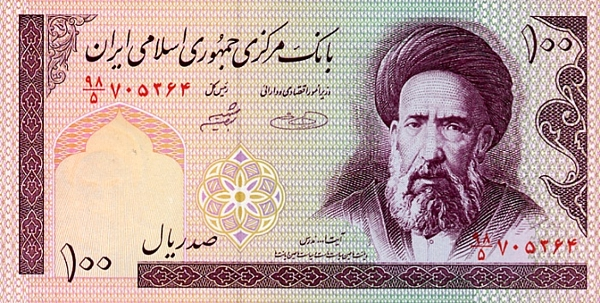

____
Валюта
Валюта в Иране - Иранский риал.
Курс: 1 Иранский риал - 0,0018 рублей (7 февраля 2021).
Появился Иранский риал в 1932 году. Находятся банкноты номиналом 100, 200, 500, 1000, 2000, 5000, 10 000, 20 000, 50 000, 100 000 риалов, а также монеты — 50, 100, 250, 500, 1000, 2000, 5000 риалов.

История
Риал впервые стал производной денежной единицей Ирана (в то время Персии) в 1798 году. Риалы были введены как монеты номиналом в 1250 динаров (разменной единицы) или 1/8 тумана (основной единицы).
В 1825 году риал перестал выпускаться и до 1932 года валютой Ирана был персидский туман.
31 июля 2019 года Правительство Ирана согласилось с предложением Центрального банка о проведении денежной реформы и введении вместо риала новой денежной единицы — тумана, равного 10 000 риалам. Решение о проведении реформы вступит в силу после одобрения его парламентом Ирана.
4 мая 2020 года Парламент Ирана утвердил законопроект о переименовании и деноминации национальной денежной единицы. Согласно этому документу, новая валюта, вводимая в обращение на территории государства, будет называться туман. При обмене одному туману будут соответствовать 10 тыс. риалов.
____